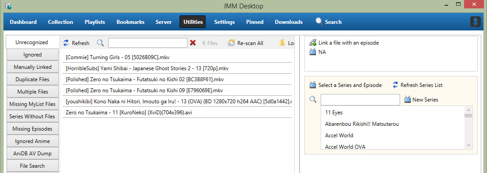

JMM Desktop - Utilities Tab
Contents
- Unrecognized
- Ignored
- Manually Linked
- Duplicate Files
- Multiple Files
- Missing MyList Files
- Series Without Files
- Missing Episodes
- Ignored Anime
- AniDB AV Dump
- File Search
- File Renaming
- Update AniDB Data
- Community Data
- My Votes
- Logs
Unrecognized
When importing your collection, any file that cannot be found on AniDB will be listed under the unrecognized tab. This doest necessarily mean the series/episode/movie/special in your collection is not on AniDB, just the version or file you have.
If you have random episodes from a series in your unrecognized files list, it usually means the file's hash was not matched to any on AniDB. This can happen if the file you downloaded was downloaded incorrectly, which happens more often then you think with the differences usually being minor and not noticeable. Alternatively if the file hasn't been submitted before then there's nothing for it to be checked against. If you're unsure head over to AniDB and check to see if the file from the release group you have is listed. If so then the copy you have was downloaded incorrectly, if not then follow the steps to submit the file, you'll be helping fellow anime fans out by doing this.

Manging Your Unrecognized Files
Your presented with a array of options to manage your unrecognized files.
Refresh - This will refresh your unrecognized files adding any new files and/or removing previously unlinked files.
Search - If you have a huge list of unrecognized files, you can narrow the search by typing the name here.
Re-Scan All - Will queue up all unrecognized files to be re-scanned via JMM Server for comparison with AniDB.
Re-Hash All - Will queue up all unrecognized files to be re-hashed via JMM Server for comparison with AniDB.
Logs - Opens your log folder, useful if you have a lot of unrecognized files and want more information on why.
Linking Your Unrecognized Files
You have a number of options when linking files to an episode
If you select one file, you can then select a single episode from the episode drop down list. You can also optionally select an episode range which is used when you have one file that covers multiple episode. You can also select multiple file followed by selecting the episode range. For example, select 20 files and then assign episode 1 - 20. You can also just select one episode for episodes that are split across multiple files
Ignored
Manually Linked
Duplicate Files
Multiple Files
Missing MyList Files
Series Without Files
Missing Episodes
Ignored Anime
AniDB AV Dump
File Search
File Renaming
The file renaming tab is an optional but powerful renaming utility that allows to to setup a profile to automatically rename your files as they are imported into your collection. Additionally it also supports the ability to rename files already in your collection if you decide to change your filename format later on. The file renaming functionality is based off WebAOM and modified for JMM Desktop. The process works by taking the meta-data provided by AniDB and combining it with your renaming scripts to rename the files in your collection.
Scripting
You will need to create a script which contains a series of rules, tests and replacement tags which determines how your files will be renamed
Use the tests to create a string of tags and other text which will be used to rename the file.
Tests
For most tests you can insert a'!' inside the brackets to indicate NOT
For example
IF A(69) DO FAIL // If the anime id is 69 (Naruto) then don't rename the file
IF A(!69) DO FAIL // If the anime id is NOT 69 (Naruto) then don't rename the fileSome tests will also allow the following operators. These will be referred to as numerical operators below
> // Greater Than
>= // Greater Than or Equal To
< // Less Than
<= // Less Than or Equal ToYou can have multiple tests on one line by using the AND and OR operators
However you cannot have both an AND and an OR on the same line
, // OR
; // AND
IF A(69),A(1),A(2) DO FAIL // If Anime ID is 69 or 1 or 2, do not rename the file
IF I(epn);I(!epr) DO ADD '%epn' //If the episode has an romaji title but not an English title add the romaji episode title| Test | Example | Explanation |
|---|---|---|
| A | A(69) | Test if the anime for the file has the specified Anime ID |
| G | G(1012) | Group id or 'unknown' |
| E | E(67987) | Episode number |
| H | H(S) | Episode Type [E=episode, S=special, T=trailer, C=credit, P=parody, O=other] |
| X | X(13) | X(<100) Total number of episodes, Numerical operators allowed, only for normal episodes not specials, credits etc |
| R | R(DVD) | Rip source [Blu-ray, unknown, camcorder, TV, DTV, VHS, VCD, SVCD, LD, DVD, HKDVD, WWW] |
| T | T(TV) | Type [unknown, TV, OVA, Movie, Other, web] |
| Y | Y(2008) | Year first aired, Numerical operators allowed |
| D | D(English) | Dub language (one of the audio tracks) [Japanese, English, ...] |
| S | S(English) | Sub language (one of the subtitle tracks) [Japanese, English, ...] |
| I | I(ann) | Tag is defined. Do not use %, i.e. I(eng) [eng, kan, rom, ann, ...] |
| C | C(H264/AVC) | Video Codec (one of the video tracks) [H264/AVC, DivX5?/6, unknown, VP Other, WMV9 (also WMV3), XviD, ...] |
| J | J(FLAC) | Audio Codec (one of the audio tracks) [AC3, FLAC, MP3 CBR, MP3 VBR, Other, unknown, Vorbis (Ogg Vorbis) ...] |
| Z | Z(10) | Video Bit Depth, Numerical operators allowed [8,10] |
| W | W(>=1280) | Video Resolution Width, Numerical operators allowed, [720, 1280, 1920, ...] |
| U | U(>=1080) | Video Resolution Height, Numerical operators allowed, [576, 720, 1080, ...] |
| M | M() or M(!) | Test if the file is manually linked |
| N | N() or N(!) | Test if the file has any episodes attached (for check if unrecognized) |
Tags
Tags are always inside single quotes, preceded by a % and three letters long. Tags will be replaced with the meta-data from AniDB
| Tag | Replaced With |
|---|---|
| %ann | Anime Name - Romaji |
| %kan | Anime Name - Kanji |
| %eng | Anime Name - English |
| %epn | Episode Name - Romaji |
| %epr | Episode Name - English |
| %enr | Episode Number |
| %grp | Group Name - Short |
| %grl | Group Name - Long |
| %ed2/%ED2 | ED2K - Lower/Upper |
| %crc/%CRC | CRC - Lower/Upper |
| %ver | File Version |
| %qua | Video Quality |
| %src | Video Source |
| %res | Video Resolution |
| %yea | Year |
| %eps | Episode Count |
| %typ | Anime Type // [unknown, TV Series, OVA, Movie, TV Special, Other, web] |
| %fid | File ID |
| %aid | Anime ID |
| %eid | Episode ID |
| %gid | Group ID |
| %dub | Dub Language |
| %sub | Sub Language |
| %vid | Video codec (tracks separated with ') |
| %aud | Audio codec (tracks separated with ') |
| %bit | Video Bit Depth (8bit, 10bit) |
| %sna | The original file name as specified by the sub group |
| %cen | Censored |
| %dep | Deprecated |
Scripting Basics
| Syntax | Example | Explanation |
|---|---|---|
| // | // | This is a comment This is used to indicate a comment, and everything after this will be ignored |
| ' ' | 'Version_%ver' | Everything inside the single quotes will be added to the file name including spaces. |
| %tag | %ann | Tags are preceded by a % and will be replaced with the meta-data. |
Scripting Rules
- Scripts are not validated so you must make sure they conform to the rules
- You can only have one action DO ADD per line
Sample Scripts
General Example
IF A(69) DO FAIL //Do not rename file if it is Naruto
// Sub groups
DO ADD '[%grp] ' //sub group name short
// Anime Name
IF I(eng) DO ADD '%eng - ' // if the anime has an official/main title English add it to the string
IF I(ann);I(!eng) DO ADD '%ann - ' //If the anime has a romaji title but not an English title add the romaji anime title
// Episode number
DO ADD '%enr - ' //Add the Episode number, same for all files
// Episode name
IF I(epr) DO ADD '%epr' //If the episode has an English title add to string
IF I(epn);I(!epr) DO ADD '%epn' //If the episode has an romaji title but not an English title add the romaji episode title
// Audio and subtitle languages
IF I(sub) DO ADD ' (SUB:%sub)'
IF I(dub) DO ADD ' (LAN:%dub)'
// FILE Version
IF F(!1) DO ADD ' [v%ver]' //If the file is not version 1, add the file versionSample 1
Output: [Coalgirls]_Highschool_of_the_Dead_-_01_(1920x1080_Blu-ray_H264)_[90CC6DC1].mkv
// Sub group name
DO ADD '[%grp] '
// Anime Name, use English name if it exists, otherwise use the Romaji name
IF I(eng) DO ADD '%eng '
IF I(ann);I(!eng) DO ADD '%ann '
// Episode Number, don't use episode number for movies
IF T(!Movie) DO ADD '- %enr'
// If the file version is v2 or higher add it here
IF F(!1) DO ADD 'v%ver'
// Video Resolution
DO ADD ' (%res'
// Video Source (only if blu-ray or DVD)
IF R(DVD),R(Blu-ray) DO ADD ' %src'
// Video Codec
DO ADD ' %vid'
// Video Bit Depth (only if 10bit)
IF Z(10) DO ADD ' %bitbit'
DO ADD ') '
DO ADD '[%CRC]'
// Replacement rules (cleanup)
DO REPLACE ' ' '_' // replace spaces with underscores
DO REPLACE '0x0' ''
DO REPLACE '__' '_'
DO REPLACE '__' '_'
// Replacement rules (codecs)
DO REPLACE 'H264/AVC' 'H264'
DO REPLACE 'DivX5/6' 'DivX'
DO REPLACE 'WMV9' 'WMV9'
DO REPLACE 'MP3 CBR' 'MP3'
DO REPLACE 'MP3 VBR' 'MP3'
DO REPLACE 'Vorbis (Ogg Vorbis)' 'Vorbis'
// Replace all illegal file name characters
DO REPLACE '<' '('
DO REPLACE '>' ')'
DO REPLACE ':' ';'
DO REPLACE '"' '`'
DO REPLACE '/' '_'
DO REPLACE '\' '_'
DO REPLACE '|' '_'
DO REPLACE '?' '_'
DO REPLACE '*' '_'Sample 2 - Video format instead of resolution
Output: [Coalgirls]_Highschool_of_the_Dead_-_01_(1080p_Blu-ray_H264)_[90CC6DC1].mkv
// Sub group name
DO ADD '[%grp] '
// Anime Name, use English name if it exists, otherwise use the Romaji name
IF I(eng) DO ADD '%eng '
IF I(ann);I(!eng) DO ADD '%ann '
// Episode Number, don't use episode number for movies
IF T(!Movie) DO ADD '- %enr'
// If the file version is v2 or higher add it here
IF F(!1) DO ADD 'v%ver'
// Video Format
IF W(>=1920) DO ADD ' (1080p'
IF W(>=1280);W(<1920) DO ADD ' (720p'
IF W(<1280) DO ADD ' (SD'
// Video Source (only if blu-ray or DVD)
IF R(DVD),R(Blu-ray) DO ADD ' %src'
// Video Codec
DO ADD ' %vid'
// Video Bit Depth (only if 10bit)
IF Z(10) DO ADD ' %bitbit'
DO ADD ') '
DO ADD '[%CRC]'
// Replacement rules (cleanup)
DO REPLACE ' ' '_' // replace spaces with underscores
DO REPLACE 'H264/AVC' 'H264'
DO REPLACE '0x0' ''
DO REPLACE '__' '_'
DO REPLACE '__' '_'
// Replace all illegal file name characters
DO REPLACE '<' '('
DO REPLACE '>' ')'
DO REPLACE ':' '-'
DO REPLACE '"' '`'
DO REPLACE '/' '_'
DO REPLACE '/' '_'
DO REPLACE '\' '_'
DO REPLACE '|' '_'
DO REPLACE '?' '_'
DO REPLACE '*' '_'Sample 3
Output: Highschool of the Dead - 01 [1920x1080] [Coalgirls].mkv
// Anime Name, use English name if it exists, otherwise use the Romaji name
IF I(eng) DO ADD '%eng '
IF I(ann);I(!eng) DO ADD '%ann '
// Episode Number, don't use episode number for movies
IF T(!Movie) DO ADD '- %enr'
// If the file version is v2 or higher add it here
IF F(!1) DO ADD 'v%ver'
// Video Resolution
DO ADD ' [%res]'
// Sub group name
DO ADD ' [%grp] '
// Replacement rules (cleanup)
DO REPLACE ' ' '_' // replace spaces with underscores
DO REPLACE '0x0' ''
DO REPLACE '__' '_'
DO REPLACE '__' '_'
// Replacement rules (codecs)
DO REPLACE 'H264/AVC' 'H264'
DO REPLACE 'DivX5/6' 'DivX'
DO REPLACE 'WMV9' 'WMV9'
DO REPLACE 'MP3 CBR' 'MP3'
DO REPLACE 'MP3 VBR' 'MP3'
DO REPLACE 'Vorbis (Ogg Vorbis)' 'Vorbis'
// Replace all illegal file name characters
DO REPLACE '<' '('
DO REPLACE '>' ')'
DO REPLACE ':' ';'
DO REPLACE '"' '`'
DO REPLACE '/' '_'
DO REPLACE '\' '_'
DO REPLACE '|' '_'
DO REPLACE '?' '_'
DO REPLACE '*' '_'Sample 4 - Original File Name
Output: [Coalgirls] Highschool of the Dead - 06 [1920x1080 Blu-Ray FLAC] [00AF0C10].mkv
// Use the file name as original specified by the release group
DO ADD '%sna'Update AniDB Data
Community Data
The Community Data section allows you to compare your community links against JMM's user submitted and approved community links. JMM Desktop currently supports comparing your Trakt and TvDB community links against the JMM community links.
A detailed explanation of community links can be found here.
Trakt Only
Check my links are still valid on Trakt - Will check your links to make sure they are still accurate on Trakt.
Automatically remove bad information from the database - Will remove any outdated information from your collection and Trakt.
Global
Check
if my links are different from the community recommendations - Will check your community links (TvDB) against JMM's community links and display any series that do not match.
Stop after finding this many problems - Will stop searching for errors once JMM Desktop reaches the number you've entered. Default value is 50.
Filter Options
All - Will show all found problems.
Missing A Link - Will only show series that do not have a valid Trakt link on your side.
Link is Different to Approved Link - Will only show series that don't match up with JMM's Community Recommendation link.
Reading The Results
In the example image, the series 11 Eyes does not have a Trakt link. Because there is no Trakt link, JMM Desktop can not confirm if the Trakt link is valid which is why the Valid Trakt Link indicator is neither red or green. The Community Link being green does not mean the link is correct, it means your Community Link (TvDB) is different than the approved community recommended link. In this case a red indicator would mean the Community Link (TvDB) is correct as we are comparing Trakt TV link to the Community Link (TvDB). If you use the community recommended link and refresh the series it will show a red indicator under Links Match? which tells you the Community Link (TvDB) is correct but does not match the Trakt link.
My Votes
Logs